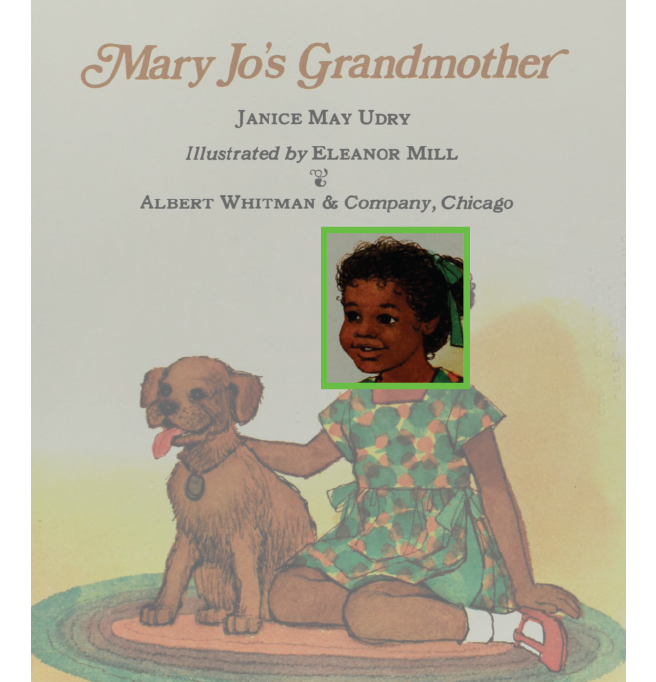

Research
Publications
“Measuring Representation of Race, Gender, and Age in Children’s Books: Face Detection and Feature Classification in Illustrated Images” (January 2022, Proceedings of the IEEE/CVF Winter Conference on Applications of Computer Vision)
Abstract
Images in children’s books convey messages about society and the roles that people play in it. Understanding these messages requires systematic measurement of who is represented. Computer vision face detection tools can provide such measurements; however, state-of-the-art face detection models were trained with photographs, and 80% of images in children’s books are illustrated; thus existing methods both misclassify and miss classifying many faces. In this paper, we introduce a new approach to analyze images using AI tools, resulting in data that can assess representation of race, gender, and age in both illustrations and photographs in children’s books.
Working Papers
“What We Teach About Race and Gender: Representation in Images and Text of Children’s Books” (July 2021, NBER WP 29123, Revision invited at Quarterly Journal of Economics)
with Anjali Adukia, Alex Eble, H. Birali Runesha, and Teodora Szasz
Abstract

Books shape how children learn about society and social norms, in part through the representation of different characters. To better understand the messages children encounter in books, we introduce new machine-led methods for systematically converting images into data. We apply these image tools, along with established text analysis methods, to measure the representation of race, gender, and age in children’s books commonly found in US schools and homes over the last century. We find that books selected to highlight people of color, or females of all races, consistently depict characters with darker skin tones than characters in “mainstream” books, which depict lighter-skinned characters even after conditioning on perceived race. Children are depicted with lighter skin than adults, despite no biological foundation for such a difference. Females are more represented in images than in text, suggesting greater symbolic inclusion in pictures than substantive inclusion in stories. Relative to the US Census, Black and Latinx people are underrepresented; whereas males, particularly White males, are persistently overrepresented. Our data provide a view into the “black box” of education through children’s books in US schools and homes, highlighting what has changed and what has endured.
[Press: School Library Journal, Wall Street Journal, Code Together, Inequalitalks, FutureEd, The 74, Named one of the ten most significant studies of 2021 by George Lucas Foundation’s Edutopia]
Works In Progress
“Representation of Race & Gender in Religious Private School Curriculum”
“Heterogeneous Effects of Merit-Based Community College Scholarships”